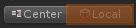

Overview¶
Introduction¶
UModeler is a ultimate and intuitive modeling extension that is available on Unity Editor. You can draw 2D shapes on any polygons in easy ways and turn them into 3D shapes intuitively.
Moreover UModeler has also adopted useful features of popular DCC tools like Max and Blender etc to empower you to create complicated and rich mesh assets as well as game levels easily and quickly without any help of the external DCC tools.
Install¶

Import UModeler in your project after getting it.

Make sure that Tools/UModeler menu has been created at the top. If you click on New UModeler as shown in the upper image, a new game object with UModeler component will be created and you can see the layout looking like the following.
Layout¶
UModeler Layout
[1]Working Area- Editing meshes.
[2]Toolbar- Frequently used tools are located here. i.e.
Vertex/Edge/Polygon Selection/Transformtools,New UModeler Object,Settingsand3D CursorTools. [3]UModeler Inspector
UModeler Inspector
- Header
UModeler Ver 2.xx- Opens the About dialog box.Close- Disables UModeler to make the current UModeler object behave and visulized same as the general obejct. It can be enabled again by clicking on Open button which is shown up during the disable status.?- Opens the online manual describing what the current tool is and how to use it.Search EditBox- Searches for a specific tool. This edit box can be activated by pressing ENTER in the scene view.- Menu part
- There are icons on various UModeler tools. You can switch the menu mode between icon-based and text-based via the popup menu which is brought up by pressing
RMB. And it’s possible to detach it from the inspector to the separated window. - Properties part
- The properties and UIs related to the current tool are displayed here. This can also be detached to the separated window via the popup menu.
[4]Gizmo type
Selecting a gizmo among
Translate,RotateandScale. These buttons are interlocked with the UModeler gizmo type.[5]Coordinate Frame- 
Selecting a coordinate frame of both
GlobalandLocal. These buttons are also interlocked with the UModeler gizmo’s frame. [6]UV Editor- UV Editor can be opened by selecting Tools/UModeler/UV Editor at the top menu or clicking
Open UV Editorbutton in UV Tool. If you want to know how to use UV editor more, please visit here.
User Interface¶
SPACE |
Confirms the current action. |
ESC |
Cancels the current function or Exit the current tool. |
ENTER |
Enables Search Edit Box. |
CTRL + Z |
Undo |
CTRL + Y |
Redo |
W |
Translation Gizmo |
E |
Rotation Gizmo |
R |
Scale Gizmo |
LMB |
Selects or moves several elements. |
LMB Drag |
Selects or moves several elements. |
SHIFT + LMB or LMB Drag |
Special action depending on the current tool |
CTRL + LMB or LMB Drag |
Special action depending on the current tool |
LMB Double Click |
Auto Layout. Click here to get more info |
LMB - Left Mouse Button CTRL - Control Key
Let’s get started with a box.¶
- Select
Tools/UModeler/New UModelerto create a new UModeler object.
- Make sure that a new UModeler object has been created and Box Tool has been selected in the inspector.

- Press
One Click Buildin the Properties to make sure that a box with 1m X 1m X 1m is created.
- If you want to change the size of the box, type proper values in Width, Depth and Height fields in the Properties.
- Click on
Confirmbutton if you like it. - Now you’ve made the first mesh with UModeler.

{kind=link}
{kind=link}
{kind=link}
{kind=link}